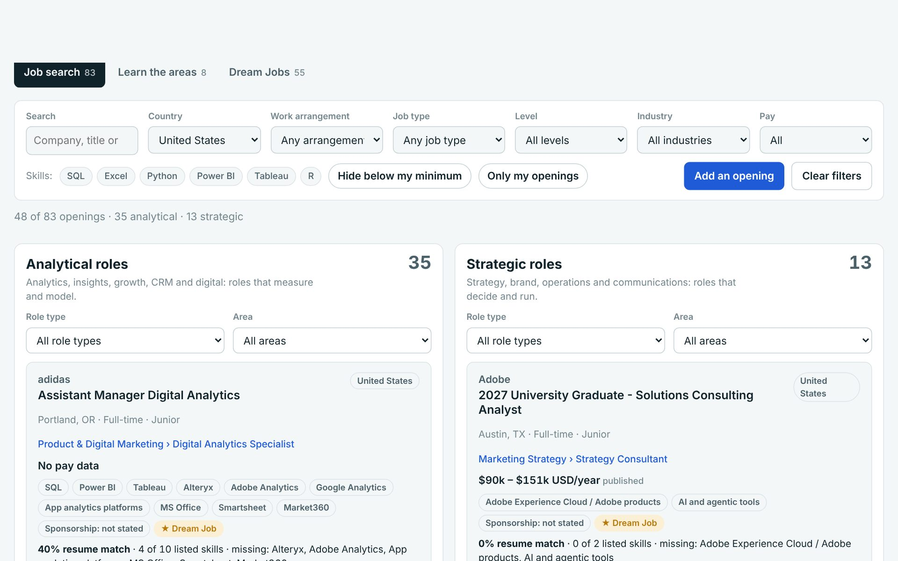

Job Search FinderA marketing job finder, built as a marketing analytics portfolio piece
Pick a country (United States first) and the screen splits into analytical roles and strategic roles, each filtered by role type, work arrangement, job type, level, industry and pay. A second section explains the eight areas of marketing; a third ranks your Dream Jobs against your resume and salary targets. 83 real openings in the sample; add your own. Everything runs in the browser.